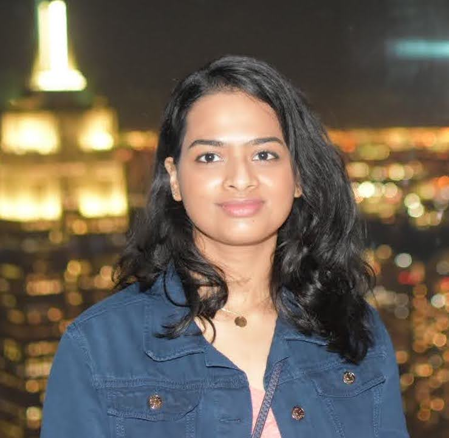
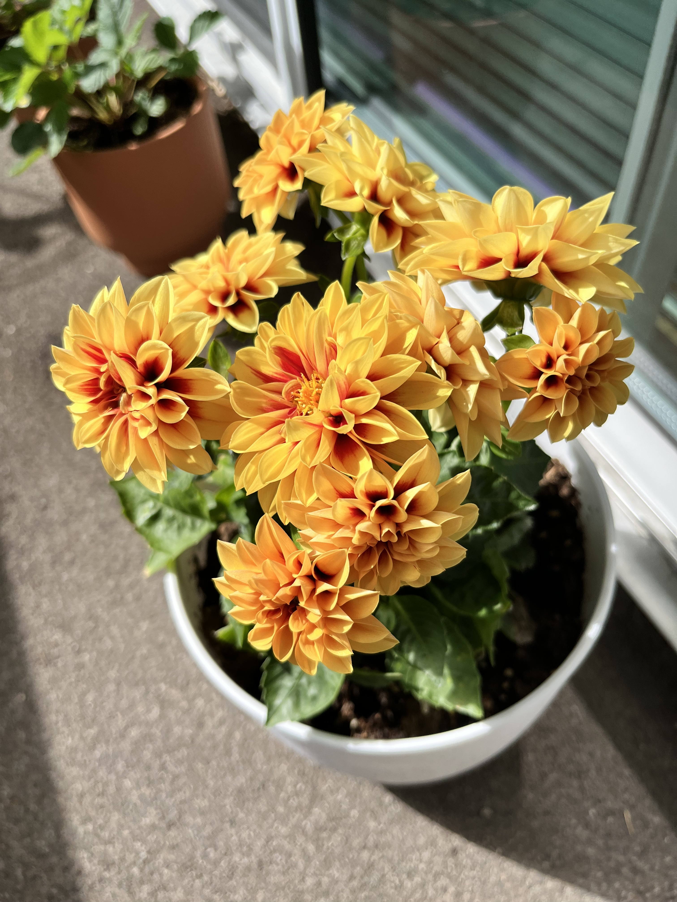
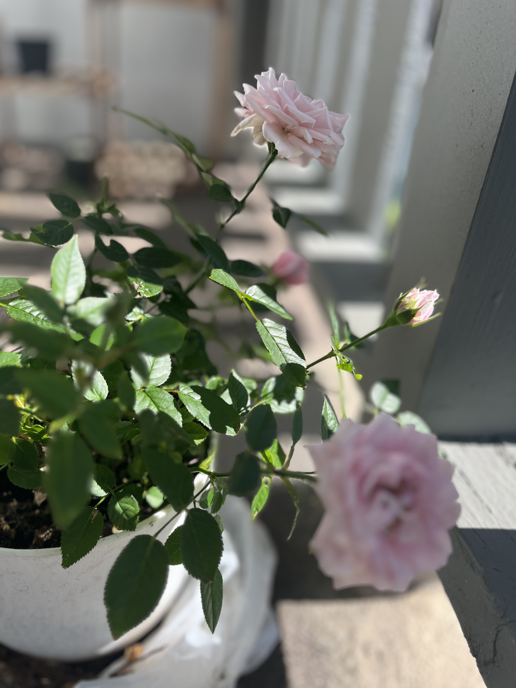
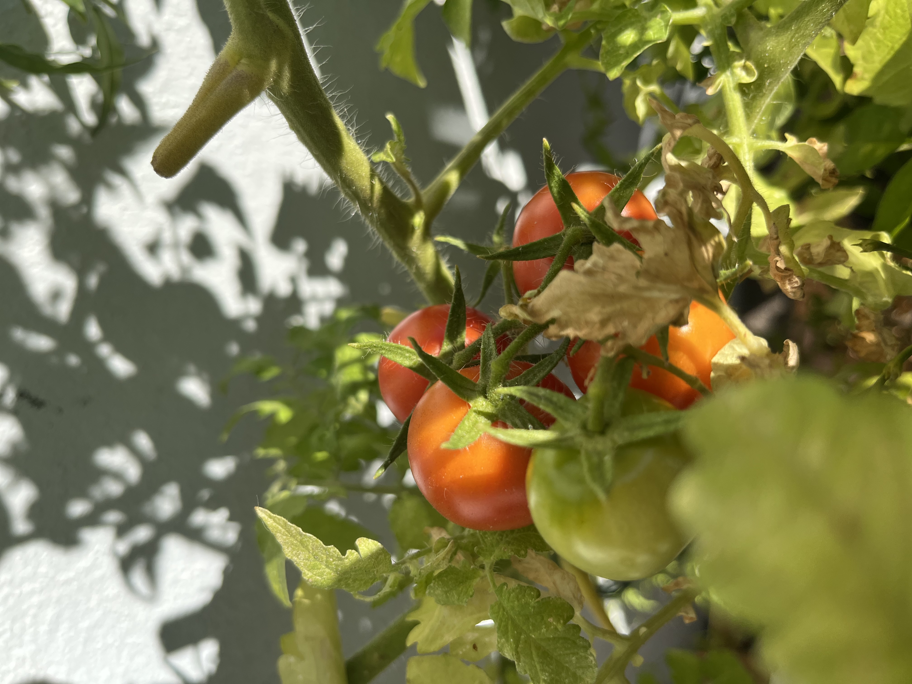
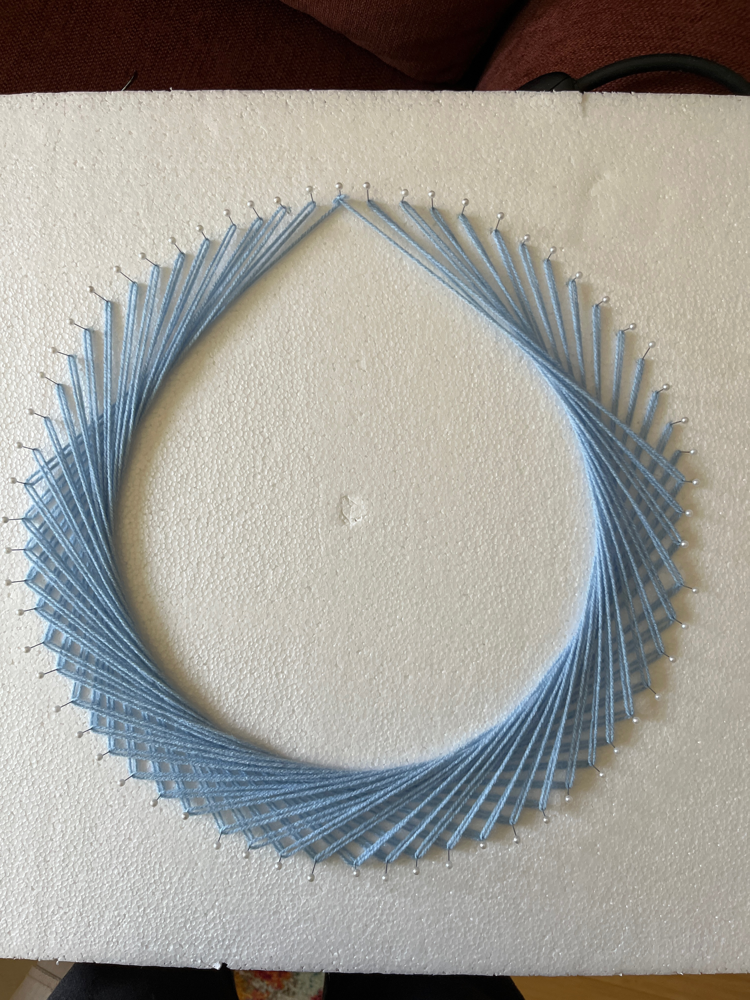
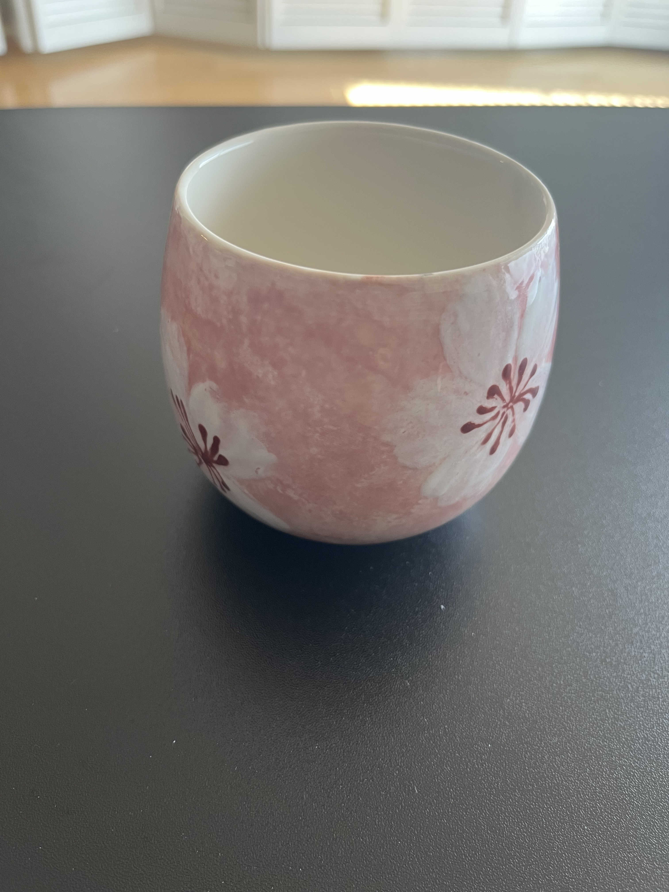
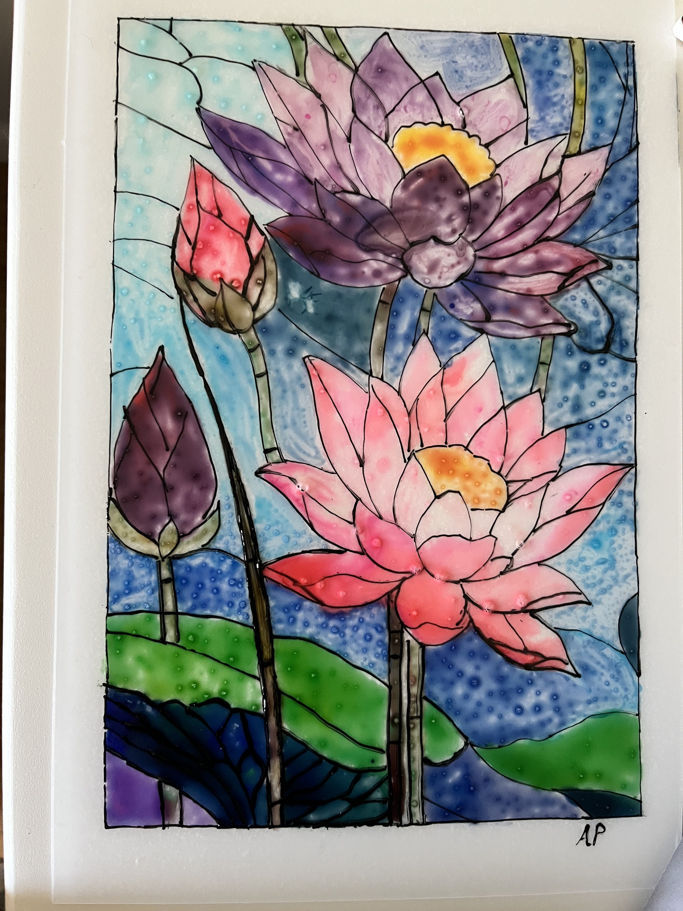

Research Scientist · Google
I work on generative modeling for images. I design sampling strategies, model architectures, and improve training pipelines to enhance the fidelity and alignment of generated media. I completed my PhD from the Machine Learning Department at Carnegie Mellon University, advised by Prof. Zico Kolter. My thesis focused on Deep Equilibrium Models and Diffusion Models in practice. I hold an MS in Computer Science from Stanford University where I was advised by Prof. Silvio Savarese, and a B.E. (Hons) in Computer Science from BITS Pilani, India.

My research advances generative modeling for images. I'm interested in designing novel sampling strategies, model architectures, improving training pipelines, and developing methods that enhance the overall fidelity and alignment of generated media.
Outside of research, I find balance in things that are wonderfully slow — tending a garden and making art by hand.



I grow herbs, vegetables, and flowers while learning that not everything can be optimized. Gardening keeps me patient and connected to seasons 🤗.



I make art as a way to think differently while playing with colors without the pressure of an objective function.